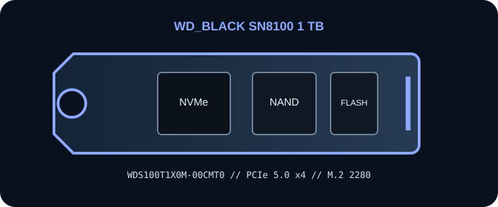

[ PCIE 5.0 X4 NVME // IDENTIFIED PRODUCT ]
WD_BLACK SN8100 1 TB
1 TB M.2 2280, bare module; PCIe 5.0 x4 NVMe SSD. Manufacturer SKU WDS100T1X0M-00CMT0. Published capacity-specific performance and endurance are vendor ratings; no performance beyond the manufacturer conditions is implied.

IDENTIFICATION: Match the full manufacturer part number, including suffix, on the drive label and packaging. Capacity, cooler, region, OEM firmware and revision variants are not interchangeable. Published peak rates describe controlled vendor testing, not guaranteed sustained results.
Manufacturer-identified specifications
| Exact product / MPN | WD_BLACK SN8100 1 TB — WDS100T1X0M-00CMT0 |
|---|---|
| Capacity / form factor | 1 TB; M.2 2280, bare module. |
| Interface / host lanes | PCI Express 5.0 x4 over an M.2 M-key NVMe socket. Link speed and lane count negotiate to the slot, CPU/chipset routing and host firmware; confirm the motherboard or system manual. |
| Protocol | NVMe over PCIe; verify host support and bootability with the system vendor. An M.2 socket may be SATA-only or may share lanes with other devices. |
| Sequential performance / endurance | Up to 14,900 MB/s sequential read and 11,000 MB/s sequential write; 600 TBW. Vendor-rated maximums; application load, firmware, temperature, fill level and host configuration affect results. |
| Controller | Controller model not specified in SanDisk public retail product specifications. |
| NAND | 3D TLC NAND; public SKU material does not identify a specific NAND component. |
| Thermal / power note | Bare module. Use the host M.2 heatsink and manufacturer thermal pad if provided; confirm clearance, airflow and BIOS NVMe support. Sustained workloads may reach thermal limits. SanDisk dashboard or firmware compatibility can depend on retail/OEM model and exact suffix; no exact SKU power draw is claimed. |
Host, firmware & installation compatibility
- Verify the motherboard/system manual for an M-key NVMe socket, M.2 2280 mechanical fit, PCIe Gen5 x4 capability, lane sharing and supported-device limitations. The drive can negotiate to a supported earlier PCIe generation, but cannot exceed the host slot’s generation or lane allocation.
- Check current BIOS/UEFI and operating-system NVMe support before installation. Boot support requires platform firmware support and is separate from physical fit or data-drive detection. Vendor SSD-management and firmware tools may support only retail SKUs, not OEM variants.
- Observe the platform’s M.2 heatsink, pad, airflow and clearance instructions. Do not stack covers or remove an integrated thermal assembly unless the manufacturer permits it. Avoid hot-plugging; shut down, isolate standby power as directed and use ESD precautions.
- Back up data and confirm recovery media, encryption keys and firmware/boot settings before replacing a boot drive. Check warranty and service terms for the exact MPN and region.
Manufacturer references & protocol source
- WD_BLACK WD_BLACK SN8100 — product and specification referenceManufacturer product-family or exact-SKU page. Verify this drive’s printed MPN and capacity variant against current source material.
- SanDisk warranty policy for internal drivesManufacturer service reference; coverage and support eligibility depend on exact SKU, region, purchase evidence and applicable terms.
- NVM Express — specificationsProtocol standards reference only; not evidence for this drive’s SKU-specific ratings.
Sequential rates and endurance are manufacturer claims for the identified capacity. Check the linked manufacturer material for current warranty conditions, firmware, compatibility and service instructions.